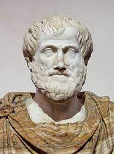

Filozofija  Filozofija је наука која се бави општим и темељним проблемима у вези са стварношћу, постојањем, знањем, вредностима, разумом, умом и језиком.[2][3] Лексикон страних речи и израза дефинише филозофију као „мудрост, научни рад на изграђивању општег погледа на свет и сам тај поглед на свет“. ОБЛАСТИ ФИЛОЗОФИЈЕ 1.1 Епистемологија 1.2 Логика 1.3 Метафизика 1.4 Политичка филозофија 1.5 Етика 1.6 Естетика